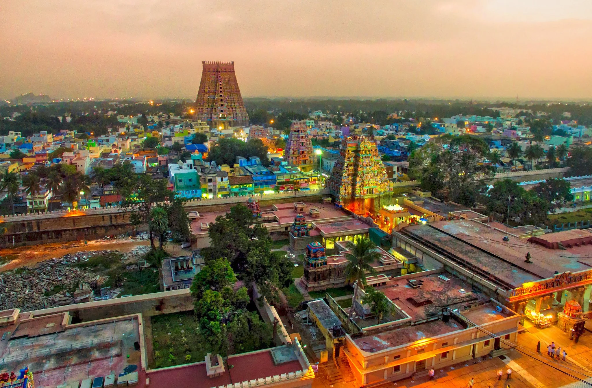
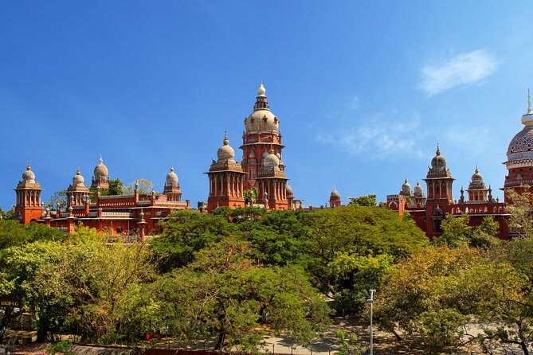
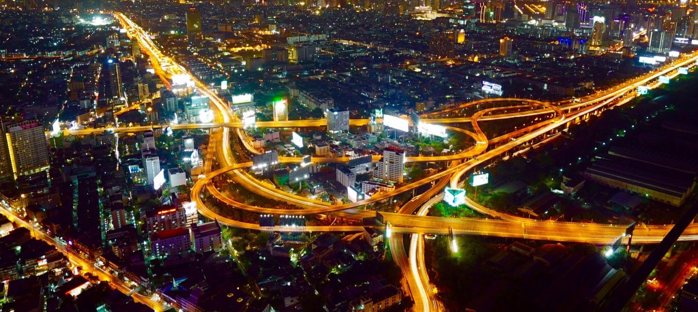

Chennai



Chennai, formerly known as Madras, is the vibrant capital of Tamil Nadu on India's southeastern Coromandel
Coast. Known as the "Cultural Capital of India" and the "Detroit of Asia" for its robust automobile industry,
this major metropolis merges deep-rooted traditions, Dravidian-style temples, and colonial history with a
thriving modern economy.